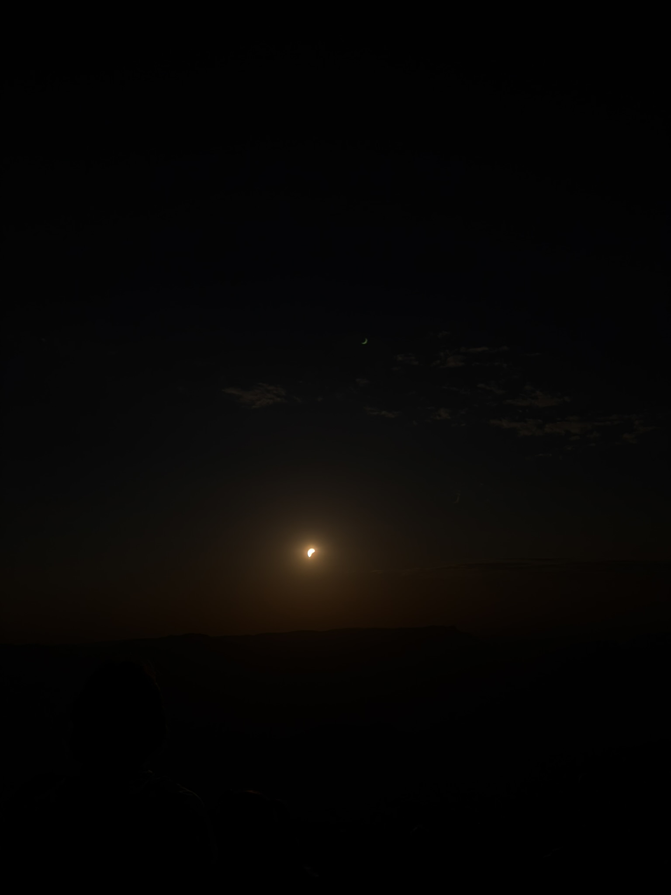
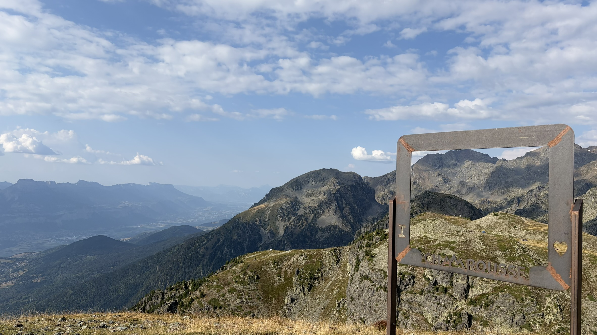
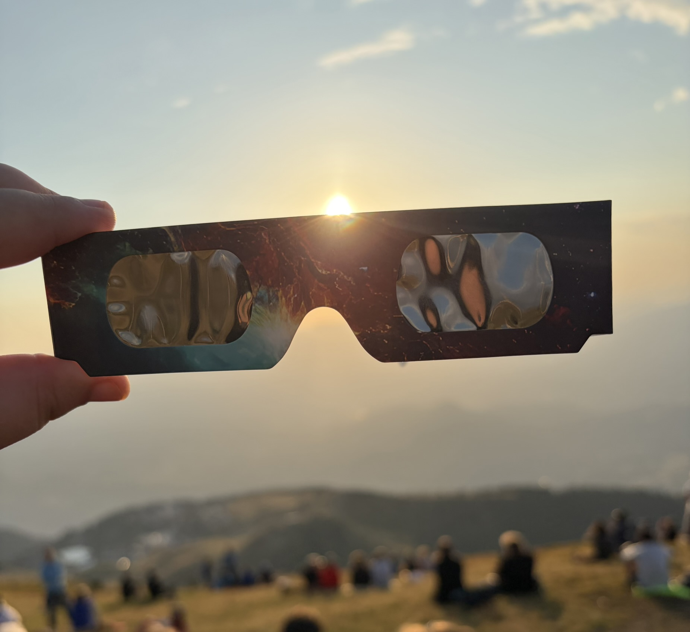
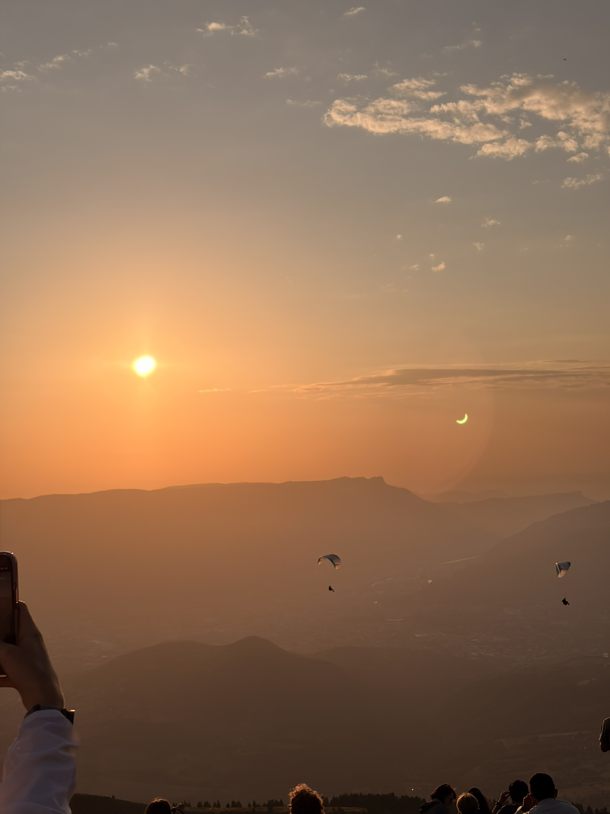

Eclipse Day 🌘
Going to see the eclipse was really cool (the motivation was that it happens every 50 years, so you'd probably be dead by the next one). In Chamrousse, they facilitated access to the summit with the téléphériques, which were open until midnight and with a discount, which was really cool. Up there, the sun would be covered at 94%, which is pretty nice, but I needed eclipse glasses (and getting them last minute was a battle). I mean, without the glasses, you can't really see it without damaging your eyes. It gave me the motivation to watch some videos about eclipses. Some cool facts are that the Moon is about 400 times smaller than the Sun and about 400 times farther away from us, which makes it fit almost exactly over the Sun when the Sun, Earth, and Moon are aligned. Another fun fact is that eclipses were one of the only opportunities scientists had to see the Sun's corona with the naked eye before artificial eclipses could be created with telescopes. Another fun fact is that the corona is Waaaay hotter than the surface of the Sun, which is weird since you are getting farther from the source. There are some theories, but it is still not completely understood. One of the ways scientists figured out that it was way hotter was a long time ago, when during an eclipse they detected what they thought was a new element from Earth. It wasn't actually a new element; it was iron that had lost 12 electrons, which requires a massive amount of energy. Watching it for the first time was pretty memorable and interesting. Very glad I did. And I took some pictures too (hope I didn't damage my camera sensors).



